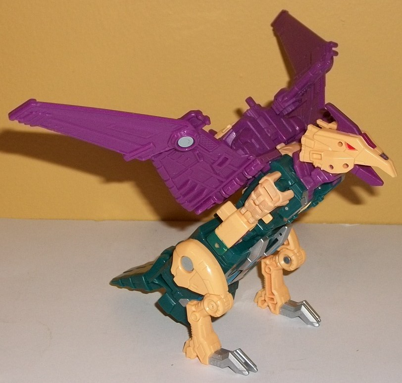
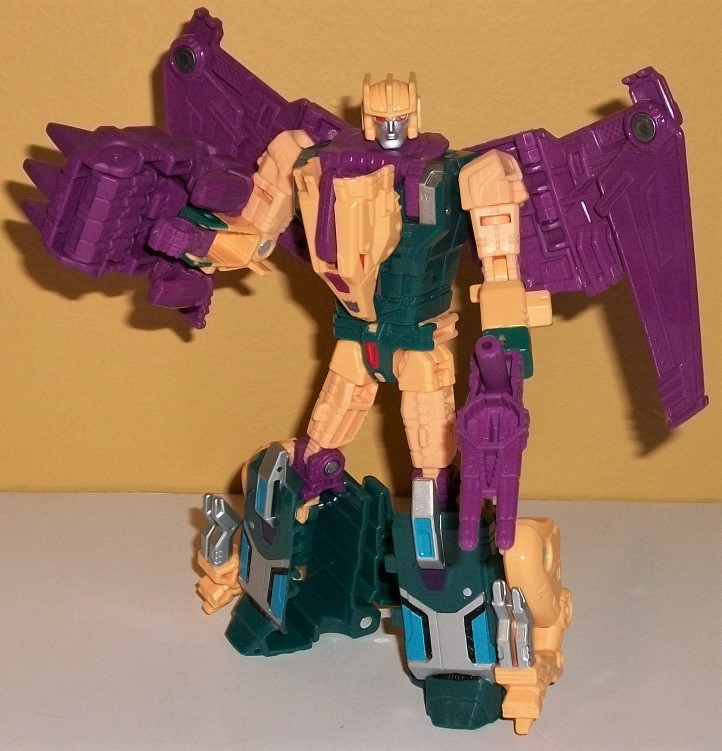
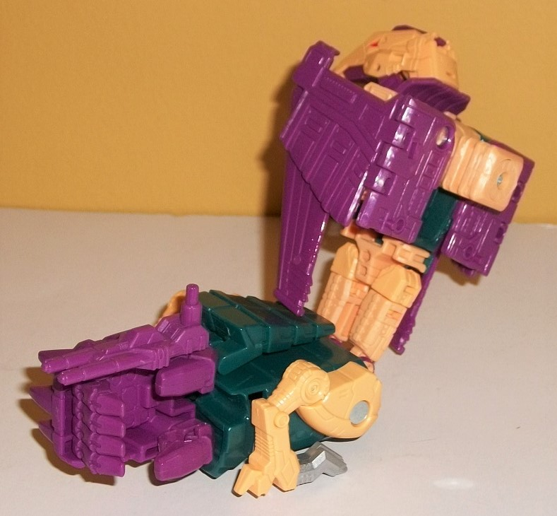
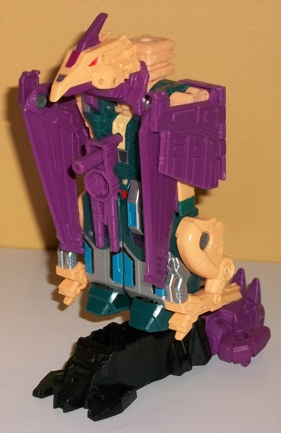

Allegiance
: Decepticon
Size
: Deluxe
Difficulty of Transformation to Robot:
Easy
Difficulty of Transformation to Leg
:
Easy
Difficulty of Transformation to Arm
:
Easy
Color Scheme
: Dark bluish green,
pale purple, light pale tan-yellow, and some silver, moderately light blue,
dark purple, and red
Rating:
9.3


Cutthroat is
one of those toys where I really went back and forth between "do I do a
partial review of it as a remold or a full review as a completely new toy?"
Eventually I erred on the side of doing a (mostly) completely new review,
as the vast majority of the toy has been remolded, but there are some definite
similarities to
PotP Swoop
, so if you're not
familiar with my thoughts on that toy/its peculiarities, you might want
to read that review before you read this one. Anyways, in beast mode Cutthroat
is a kind of robotic pterodactyl-like monster-- honestly, he's easily the
least "monsterish" out of all of the Terrorcons, and could easily pass
as some sort of pterosaur if you wanted to (which explains why he's a very
extensive remold of Swoop). Unlike Swoop, though, Cutthroat can stand more
upright, due to him having more sizeable legs on the sides of his body--
however, if you tilt him too far forward in this mode it's impossible to
get him to look like he's not crouching downards, given his head can't
look all the way up. He's got very angular, roboticized wings that don't
even have a hint of organic-ness in them, and truth be told are a tad too
slim/small to be believable wings for this creature. The head is sculpted
very nicely, kind of a cross between a normal bird face and a pterodactyl,
what with the crest coming off the top of the head-- but it does have a
more "normal"-sized beak and some robotic feather-like details near the
back. He also has a short tail that hangs off the back end. Most of the
body is, unfortunately, a bit too obviously his robot mode folded up, as
from the front you can clearly see the arms folded up on the sides of the
top half, as well as the details that obviously become the robot abs, knees,
and feet lower on the body. The legs are definitely pretty bird-like, with
large talons near the front and a "vulture-like" look to the rest of them,
with several general robotic details. The color scheme for Cutthroat is
primarily a dark bluish green on the body; some pale tan on the legs, head,
and part of the body; and a pale shade of purple on the wings and part
of the head. All in all, it's a pretty unique color scheme, with the tan
actually looking a bit flesh-like and contrasting against the dark green
very well, while the purple contrasts nicely with them both and makes him
look pretty Decepticon-y as well. There's some silver paint on the claws,
red on the eyes, and some dark purple near the front of his head. What's
interesting is that the purple paint is of a noticeably different shade
than the plastic, being a bit more bold and reddish, almost fuchsia-like,
yet it's barely used at all. Huh. (The rest of the paint is used primarily
for robot mode, so I'll talk about it then.) Cutthroat has four ports for
a Prime/Titan Master to stand on-- two near the back end of the base of
each wing, and another two near the top of his lower green body section.
You can also plug in his Prime Armor on his back between his two wings
in what is definitely one of the better ways to store this obvious combiner
hand, and Cutthroat also comes with a two-barreled gun with two different-sized
handles, allowing it to be plugged into multiple different spots on the
figure. For articulation in this mode, Cutthroat can move at the wings
(at three points), up-and-down a bit at the neck and jaw, and at the hips,
knees, and the base of his tail-- pretty decent for an animal of this kind
and size.
During his transformation,
you can definitely see how Cutthroat is based off of Swoop, even if the
details on like 90% of his parts are different. Just like Swoop, the beast
head comes down on the chest, leaving the robot head visible (though on
my copy, at least, the beast head comes off its small pivot points rather
easily during transformation); the robot arms fold out from the side of
the beast body; the wings fold up some; and the legs rotate out and down
from the lower portion of the main body. The main differences between Cutthroat
and Swoop are that Cutthroat's legs fold more straight down, instead of
curling up on his back for beast mode, and that the beast legs and tail
halves simply fold up on the sides of the lower legs. This makes the lower
legs look a bit less elegant, particularly when it comes to those beast
legs, as they're REALLY obvious. The beast head on the chest is hollow
on the top-- necessary for transformation, but making his chest not look
as solid as it should be. Otherwise, the proportions are pretty good, making
Cutthroat look on the lithe/slim side, but still within normal range of
a TF. The arms-- at least mold-wise-- are taken directly from Swoop and
are identical, as are the upper legs, Prime armor, combiner port on the
back, and the knee hinge pieces. Still, they could have made almost the
enitre main body and wings the same, and they didn't, so there's a lot
more remolding done than the bare minimum, here. The details on the legs
are quite eye-catching, with some angular silver-and-blue shapes on the
lower portions, and some skinny kneecaps of the same color with a bit more
of that purple paint below them. The sides of the chest/abs have some generic
robotic detailing, but it's definitely different than on Swoop, and the
waist has some nice red detailing on it. There's also some more silver
paint on the upper sides of the chest, and some dark blue-green near the
wrists. The headsculpt is pretty nice, with three square headcrest bits
on the top and a line connecting them all on the forehead, and a "normal"
silver face with a rather neutral expression and two red eyes. That said,
as good as all of this looks, so much of it is similar to the beast mode
I feel a bit more should have been changed. It's basically the beast mode
with longer legs, a couple of obvious beast bits folded up, the arms folded
out, and the head switched out. So many of the details and color breakup
are the same. As with other PotP deluxes, you can tab on the "Prime Armor"
onto the front of the chest, but it doesn't look good at all and is best
ignored. For articulation in this mode, beyond the wing articulation already
mentioned, he can move at the neck, shoulders (at two points), elbows,
inwards at the wrists, waist rotation, and at the hips (at two points)
and the knees-- so pretty good, overall, and he's quite well-balanced.


The limb modes are also
where the engineering matching with Swoop really becomes obvious, and where
you might want to refer to PotP Swoop's review, as the limb transformations
are nigh-identical. The wings and beast head frame the shoulders excellently
in arm mode, and like on Swoop, the robot arms stick out of the sides of
the shoulders rather obviously, since they can't sit flush to the body,
given the waist has to rotate. The lower portion of the arm mode, has the
obvious beast legs on the sides and the tail on the top, making it a bit
more unwieldy down there than on Swoop. For articulation in this mode,
he can move at the shoulder (at two points), at the elbow (at three or
four points, depending upon how you bend the arm), at the wrist, at the
base of each thumb, and at the base of the four fingers on his hand (all
as one piece; they don't move individually).
For leg mode, again,
he transforms the same as with Swoop, except for the beast legs and tail.
As before, the beast legs are pretty obvious on the sides, but they blend
in with the general shape of the leg better this time around, so I don't
mind them as much. The tail's on the back end and folded up, so it's not
as big of a deal here as in arm mode. Just as with the arm mode, the head
and wings frame the mode nicely, and I like how the head serves as a nice
"kneecap" in front of the combiner port. As with most leg modes, there's
two points of articulation at the knee/combiner peg, and rotation at the
ankle because of how the foot plugs in as well as an ankle tilt, but that's
it.
Overall, PotP Cutthroat is an excellent adaptation and an extreme and fitting remold of Swoop, with the transformation mechanics and arms borrowed but the vast majority of parts remolded to make Cutthroat largely his own figure. I do dislike how obvious the beast legs are in every mode except...well...beast mode, but otherwise the changes are neutral-to-positive, in terms of looks. The limb modes are also largely solid, except for the lower portion of the arm mode. My only real complaint about the figure is that there's just too much similarity between the beast and robot modes, but unfortunately that's always been the case with Cutthroat-- that's just been his design, and given how G1-accurate the other PotP Terrorcons largely are, it would be odd to see Hasbro change the formula up just for Cutthroat. Other than that, he's a great toy even if you don't want to combine him, with great proportions, articulation, and a nice unique color scheme, and my favorite of the PotP Terrorcons.
Review by Beastbot